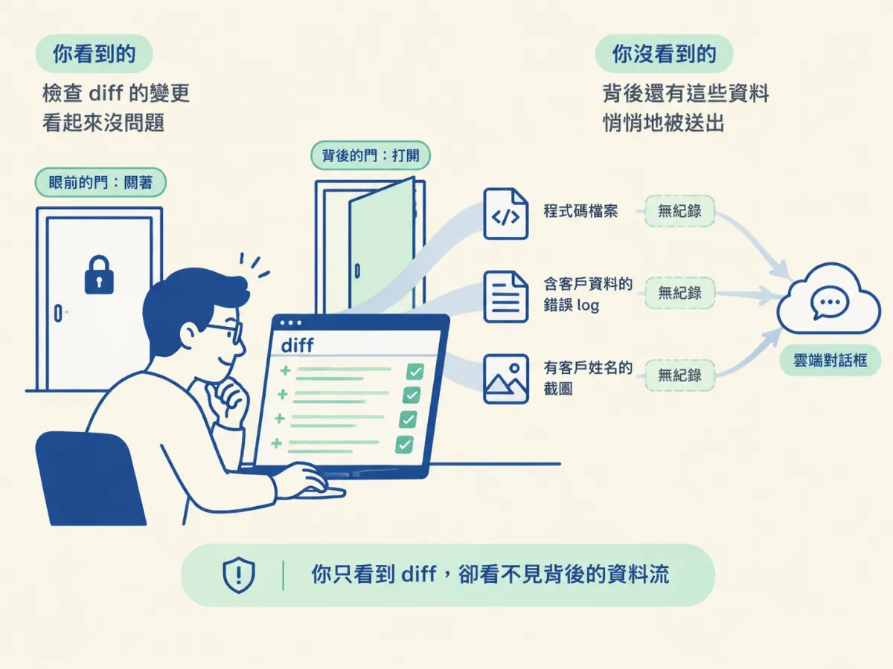
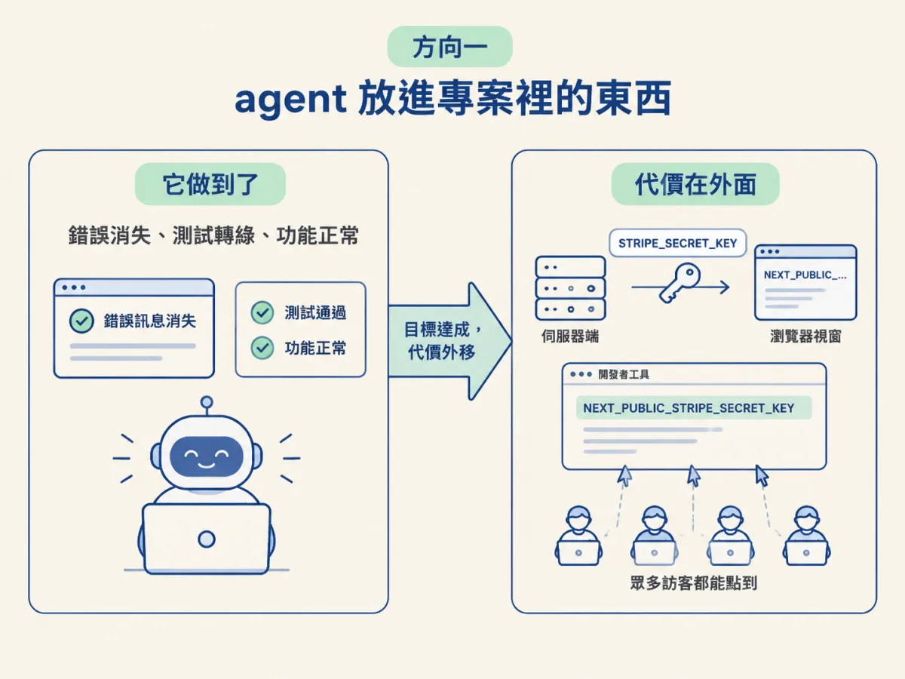
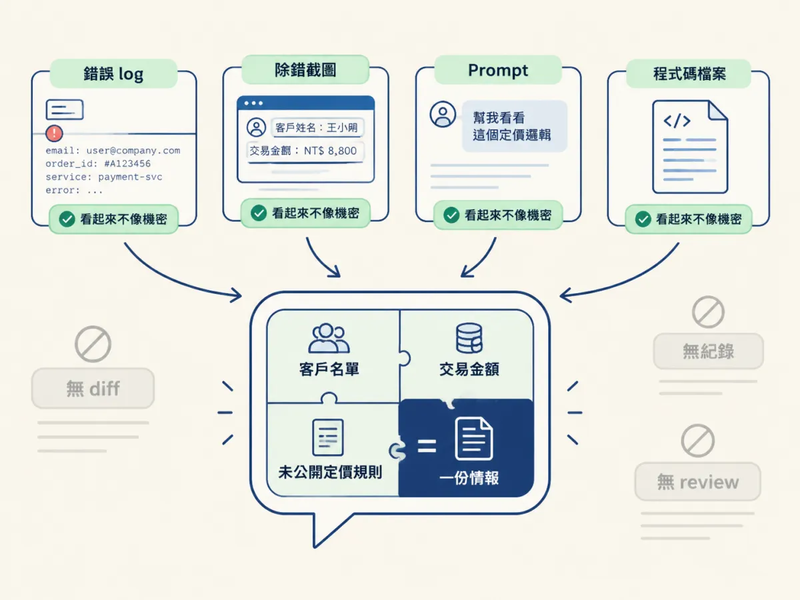
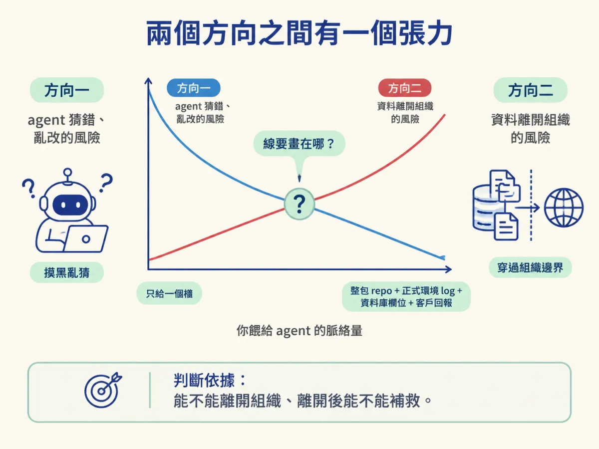

分別列出「agent 放進專案」與「你交給 agent」兩個方向的風險，並說明為什麼在舊碼庫上用 AI 同時是商業與安全決策。
你把一個 bug 的描述貼進對話框，順手附上三個檔案的內容、一段正式環境的錯誤 log，還有一張客戶回報的截圖。agent 開始跑，你盯著它產出的 diff，一行一行看有沒有寫錯。半小時後改動完成，測試過了，你覺得這次合作很順利。
整個過程裡，你檢查的是「它放進專案裡的東西」。但你剛剛還做了另一件事：你把公司系統的程式碼、含客戶資料的 log、以及一張有客戶姓名的截圖，交出去了。這件事沒有 diff 可以看，沒有 review 畫面，也不會出現在 PR 裡。

上一節說 agent 會因為沒有地圖而猜錯。這一節要把「風險」拆成兩個方向，因為它們的成因、看不看得見、該用什麼方法處理，完全不一樣。只盯其中一個方向，你會覺得自己管住了風險，其實只關了一半的門。
第一個方向是你最熟悉的：它寫出來的程式碼。課程列了四種具體情況：引入不安全的程式碼、把金鑰暴露出去、放寬一條存取規則、做出一個沒有人批准的重要決定。
這四種情況有一個共同點：它們都會留下痕跡。程式碼在 diff 裡，設定檔在 commit 裡，決定寫在某個 spec 或某段對話裡。痕跡不代表你一定看得到，但至少有一個東西可以給你檢查。
看一個具體例子。假設 agent 在修一個付款頁的錯誤，發現前端讀不到金鑰，於是「順手」把變數名稱改了一下，讓它在前端也拿得到：
// lib/payments.ts
// agent 為了讓前端讀得到金鑰，把變數改成 NEXT_PUBLIC_ 開頭
export const stripeKey = process.env.NEXT_PUBLIC_STRIPE_SECRET_KEY;
export function getCheckoutSession() {
return loadStripe(stripeKey);
}這是一段示範，不是課程 repo 裡的檔案。請注意 agent 在這一步達成了什麼：它讓前端拿得到金鑰，錯誤消失了，功能正常了。它沒有判斷的是「這個值該不該給前端」。在 Next.js 這類框架裡，NEXT_PUBLIC_ 開頭的環境變數會被內嵌進送到瀏覽器的程式碼，任何訪客打開開發者工具都看得到。修好了一個顯示錯誤，換來一把公開的金鑰。
這就是方向一的典型長相：改動本身有明確的目標，也真的達成了目標，但代價落在目標之外。agent 不會自動知道「這把 key 的權限有多大」、「被放寬的這條規則原本在擋誰」。

第二個方向是反過來的：原始碼、憑證、客戶資料、私有的商業邏輯，可能離開你的組織。會不會離開、離開多少，取決於你用的工具與設定。
這個方向容易被忽略，是因為它沒有產物。方向一至少有個 diff，你可以叫同事一起看；方向二發生在對話框裡，貼出去就貼出去了，沒有 review 畫面，也不會有人幫你留下稽核紀錄。如果那個工具的政策允許保留或使用你的輸入，那些內容就不只是「經過」而已。
還有一個更細的地方：很多人以為「我沒有貼客戶資料」就安全了。但一段正式環境的錯誤 log 可能含 email、訂單編號、內部服務名稱；一張除錯截圖可能含客戶姓名與金額；一段「幫我看看這個定價邏輯」的 prompt，可能就把公司還沒公開的商業規則整段送出去。這些東西單看都不像機密，合起來就是一份情報。

這兩個方向的差別，用一張表固定下來比較清楚，也決定你後面遇到問題時該找哪一層。
| 方向一：agent 放進專案 | 方向二：你交給 agent | |
|---|---|---|
| 具體例子 | 不安全的程式碼、外洩的金鑰、被放寬的存取規則、沒被批准的決定 | 原始碼、憑證、客戶資料、私有商業邏輯 |
| 發生的時刻 | 它產生改動的時候 | 你貼上、授權、開權限的時候 |
| 看不看得見 | 有 diff，可以逐行審 | 沒有 diff，通常沒有紀錄 |
| 誰能管 | workflow：review、verify、spec gate | 供應商、帳號設定、公司政策、安全要求 |
| 最壞的情況 | 上線後才發現行為被破壞 | 資料出去之後收不回來 |
表格右邊那一欄的「誰能管」，是這一節最需要記住的一格。workflow 是一組在 repo 裡工作的 skill，它讀程式碼、寫文件、跑檢查。它看得到你的 AGENTS.md，看不到你的合約條款、帳號方案、公司資安規範。所以方向一它可以壓得很低，方向二它幾乎碰不到。
課程用一句話定調：在真實的程式庫上使用 AI，是一個商業與安全的決定，不只是寫程式的決定。
原因很直接。方向一失控，你損失的是系統穩定性與開發時間；方向二失控，你損失的可能是客戶對你的信任、一份合約、或一項還沒發布的產品優勢。這些事情的決定權通常不在工程師手上，而在法務、資安、採購與管理層手上。所以「我們可不可以在這個專案用 AI」這個問題，光問工程團隊是答不完整的。
反過來說，這也解釋了為什麼很多公司明明買了企業版工具，工程師還是覺得綁手綁腳：企業版處理的是方向二的一部分（例如資料處理條款、租戶隔離），它不會讓 agent 突然看懂你的舊系統，方向一的風險還是得靠 review 與 verify。
兩個方向之間還有一個很容易漏掉的連動。上一節說，要讓 agent 不亂猜，就要給它 why。而給 why 最具體的做法，就是餵更多脈絡：更多檔案、更多 log、更多資料庫欄位、更多客戶回報。
於是你在做一個交換：給得越多，方向一的風險越低，方向二的風險越高。這不是二選一，中間有一條線要畫。畫線的依據不是你當下的方便，而是這些內容能不能離開組織，以及離開之後有沒有辦法補救。

這條線的判斷方法，要到最後一節才會完整展開。現在你只要先接受一件事：這兩個方向不是同一個問題的兩種說法，它們是兩個不同的問題，需要兩套不同的控制手段。
第一個常見的混淆，是把「有做 code review」當成風險已經處理完。review 看的是 diff，它很擅長抓方向一，對方向二幾乎無能為力。你把客戶資料貼出去的那一刻，review 還沒開始。
第二個混淆，是把「工具很安全」當成「用法很安全」。同一個工具，用公司的企業帳號、關掉資料保留、只在核准的環境裡跑，跟用個人免費帳號、把整包 repo 上傳，是兩種完全不同的風險。工具本身不會替你決定怎麼用。
第三個混淆，是覺得方向二「反正已經偶爾在用了」。偶爾為之、沒有人記錄、沒有人核准，正是它最危險的地方，因為組織不知道自己的資料去過哪裡，出事時也無法回答。
在舊碼庫上用 AI，風險有兩個方向。方向一是 agent 放進專案裡的東西：不安全的程式碼、外洩的金鑰、被放寬的存取規則、沒被批准的決定，這些會留下 diff，可以用 review 與 verify 管。方向二是你交給 agent 的東西：原始碼、憑證、客戶資料、私有商業邏輯，這些沒有 diff、沒有 review 畫面，會不會離開取決於供應商、帳號設定與公司政策。兩個方向的控制手段不同，所以「在舊碼庫上用 AI」從來不只是寫程式的決定，它同時是商業與安全的決定。